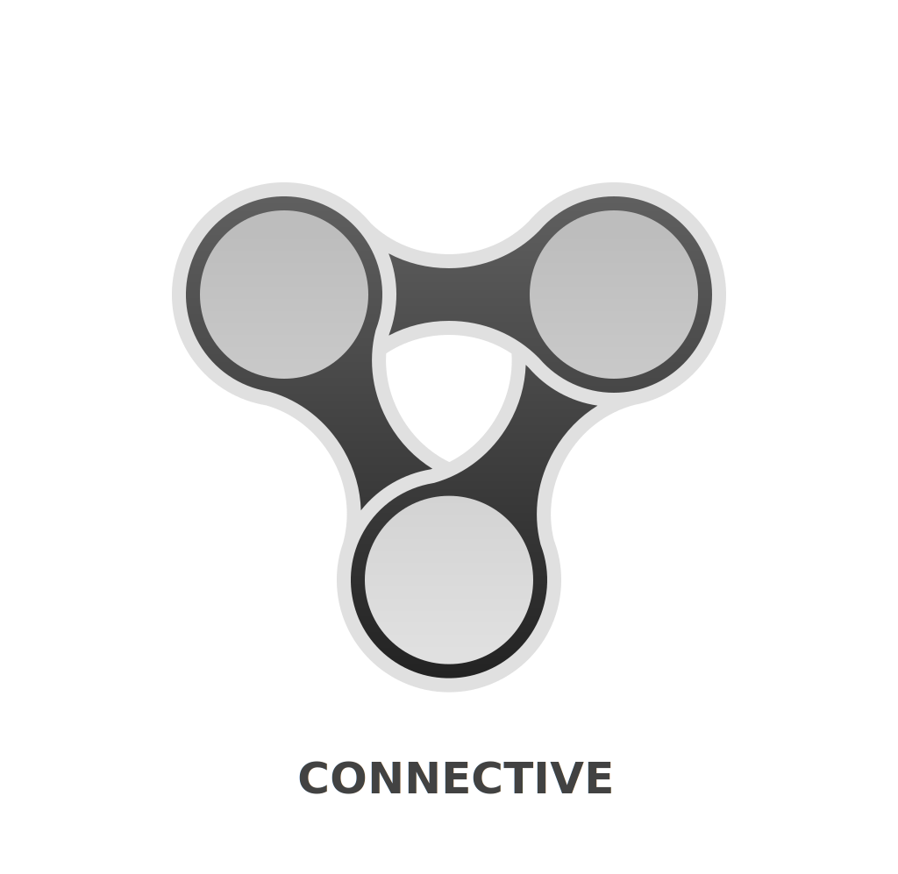

CONNECTIVE facilitates large-scale
reactive programming
in Javascript/Typescript.
It enables declarative creation of large and complex data/event flows and supports re-use of flows.
npm i @connectv/core
A
Hellow World! example:
import { wrap, map, filter } from '@connectv/core';
import { fromEvent } from 'rxjs';
let a = document.getElementById('a') as HTMLInputElement;
let p = document.getElementById('p');
//
// Will say hello to everyone but 'Donald'.
// For obvious reasons.
//
wrap(fromEvent(a, 'input')) // --> wrap the `Observable` in a `Pin`
.to(map(() => a.value)) // --> map the event to value of the input
.to(filter(name => name != 'Donald')) // --> filter 'Donald' out
.to(map(name => 'hellow ' + name)) // --> add 'hellow' to the name
.subscribe(msg => p.innerHTML = msg); // --> write it to the <p> element
A more elaborate example:
import { wrap, pipe, map, filter, sink } from '@connectv/core';
import { fromEvent, timer } from 'rxjs';
import { delay, debounceTime } from 'rxjs/operators';
let a = document.getElementById('a');
let p = document.getElementById('p');
//
// Will calculate fibonacci sequence up to given index, displaying every number in the
// sequence along the way.
//
// --> calculate next iteration step on fibonacci sequence
let m = map(([next, prev, l]) => [next + prev, next, l - 1]);
wrap(fromEvent(a, 'input')) // --> wrap the `Observable` in a `Pin`
.to(pipe(debounceTime(1000))) // --> wait for people to type in the number
.to(map(() => parseInt((a as any).value))) // --> map the input event to value of the input
.to(map(n => [1, 0, n])) // --> map the number to start iteration
.to(filter(([_, __, l]) => l >= 0)) // --> check if we should do any iteration
.to(m) // --> calculate next step
.to(pipe(delay(300))) // --> take a breath
.to(filter(([_, __, l]) => l > 0)) // --> check if we should continue
.to(m) // --> back to the loop
.to(map(([_, f, __]) => f)) // --> btw, lets take each number in the sequence
.to(sink(v => p.innerHTML = v)) // --> set the text of <p> to the fib number
.subscribe(); // --> bind the whole thing.
CONNECTIVE is a thin layer on top of
RxJS.
While
RxJS's API excels at short-lived and small reactive flows,
CONNECTIVE provides
an API that makes creating long-living and large and/or complex reactive flows easy and intuitive.
How To Install
Using
NPM:
npm i @connectv/core
Getting it via a CDN:
<script src="https://unpkg.com/@connectv/core/dist/bundles/connective.es5.min.js"></script>
How To Use
Reading the docs
for properly utilizing
CONNECTIVE. A
basic knowledge of RxJS
would also help, though it is not mandatory. For basic usage and/or for getting started, here is a quick-dive:
Quick Dive
CONNECTIVE is about creating reactive flows. A reactive flow typically starts with some source of data/events,
leading to some sinks for those data/events which would consume them, possibly going through and being transformed by
some other nodes along the way:
import { source, sink, pin } from '@connectv/core';
let a = source();
let b = pin();
let c = sink(value => console.log(value));
a.to(b).to(c); // --> data/events go from a to b then to c.
c.bind();
a.send('hellow!');
a.send('world!');
import { source, sink, pin } from '@connectv/core';
let a = source();
let b = pin();
let c = sink(v => console.log(v));
c.from(b).from(a); // --> data/events that c receives come from b which in turn come from a.
c.bind();
a.send('hellow!');
a.send('world!');
Every node of such a flow is represented by a
Pin
(or some
PinLike
object). The
pin(),
source() and
sink() functions all return a
Pin.
You can connect pins to each other using their
.to() and
.from() methods.
You can pass multiple parameters to
.to() and
.from(), causing the
Pin
to be connected to multiple pins:
import { source, sink } from '@connectv/core';
let a = source();
let b = sink(value => console.log('B::' + value));
let c = sink(value => console.log('C::' + value));
a.to(b, c); // --> stuff from a goes to both b and c
b.bind(); c.bind();
a.send('hellow!');
a.send('world!');
import { source, sink } from '@connectv/core';
let a = source();
let b = source();
let c = sink(value => console.log(value));
c.from(a, b); c.bind(); // --> c's stuff come from both a and b
a.send('hellow!');
b.send('world!');
Subscribing
You can directly subscribe on any
Pin using its
.subscribe() method, so you don't need to use
sink() all the time.
You can also use
group() to work with a multitude of
Pins at once:
import { source, pin, group } from '@connectv/core';
let a = source();
let b = source();
group(a, b).to(pin()).subscribe(v => console.log(v));
a.send('hellow!');
b.send('world!');
Note that:
- the .bind() method is not present on all pin types.
- when you call .subscribe() or .bind() methods of a pin, the pin
becomes locked. You cannot connect any new pin to a locked pin.
- if a pin is connected to another locked pin, it will become locked as well.
- you can check if a pin is locked via its .locked property.
import { pin } from '@connectv/core';
let a = pin();
let b = pin();
a.to(b);
console.log('A:: ' + a.locked + ' B:: ' + b.locked);
// > 'A:: false B:: false'
b.subscribe();
console.log('A:: ' + a.locked + ' B:: ' + b.locked);
// > 'A:: true B:: true'
Sources
You can also create sources from plain values or from
Observables:
import { wrap, value, pin, group } from '@connectv/core';
import { interval } from 'rxjs';
let a = value('hellow world!'); // --> a emits 'hellow world!' once
let b = wrap(interval(1000)); // --> b emits a number every 1000ms
group(a, b).to(pin()).subscribe(v => console.log(v));
Note that you cannot connect any pin to
wrap().
Spread
You can use
spread() to turn incoming values into multiple emissions:
import { spread, value } from '@connectv/core';
value([1, 2, 3, 4, 5, 6])
.to(spread())
.subscribe(v => console.log(v));
Filter & Map
You can change incoming values using
map(), and let them through or block them using
filter():
import { spread, value, filter, map } from '@connectv/core';
value([1, 2, 3, 4, 5, 6])
.to(spread())
.to(filter(v => v % 2 == 0)) // --> only allow even ones through
.to(map(v => v * 10)) // --> multiply each value by 10
.subscribe(v => console.log(v));
Control
You can break your flow into multiple branches and join them back using
control():
import { spread, value, map, control } from '@connectv/core';
value([1, 2, 3, 4, 5, 6])
.to(spread())
.to(
map(v => v * 10),
map(v => v * 100),
)
.to(control()) // --> will wait for all incoming emissions and join them pair-wise
.subscribe(v => console.log(v));
Loops
You can even create loops in your flow:
import { source, map, filter } from '@connectv/core';
let a = source();
let m = map(x => x + 1); // --> lets give this pin a name so we can loop back to it
a.to(m)
.to(filter(x => x < 10)) // --> keep looping until we reach 10
.to(m) // --> looping back to m
.subscribe(v => console.log(v));
a.send(0);
Pipe
In the example above, the order is not necessarily preserved. You can for example enforce the order by using
RxJS's
delay() operator:
import { source, map, filter, pipe } from '@connectv/core';
import { delay } from 'rxjs';
let a = source();
let m = map(x => x + 1); // --> lets give this pin a name so we can loop back to it
a.to(m)
.to(filter(x => x < 10)) // --> keep looping until we reach 10
.to(pipe(delay(1))) // --> wait a bit
.to(m) // --> looping back to m
.subscribe(v => console.log(v));
a.send(0);
pipe() allows you to use any
RxJS pipeable operator.
Note that values are not passed directly to pipeable operators, they are wrapped in
Emission
objects, and their return value should
also be of that type.
Composition
You can re-use parts of your reactive flows using the
Composition
class:
import { Composition, source, filter } from '@connectv/core';
class EvenOdd extends Composition {
constructor() {
super({
inputs: ['a'], // --> marks pins that go into the flow
outputs: ['even', 'odd'] // --> marks pins that go out of the flow
});
}
build() {
//
// build all the elements of the flow
//
this.add('oddFilter', filter(x => x % 2 == 1));
this.add('evenFilter', filter(x => x % 2 == 0));
}
wire() {
//
// wire the flow together
//
this.in('a').to(this.pin('oddFilter')).to(this.out('odd'));
this.in('a').to(this.pin('evenFilter')).to(this.out('even'));
}
}
//
// now using the composition:
//
let a = source();
let eo = new EvenOdd();
a.to(eo.in('a'));
eo.out('even').subscribe(v => console.log('EVEN:: ' + v));
eo.out('odd').subscribe(v => console.log('ODD:: ' + v));
a.send(2);
a.send(3);
a.send(4);
Agent
Compositions are sub-classes of
Agent
class. This base class represents all re-usable reactive flows.
CONNECTIVE comes with a number
of useful agents that you can use in creating your own flows and compositions.
The main property of an Agent is its
Signature. A signature is simply an object with a list of
strings named
inputs and a list of strings named
outputs. These two lists
denote the possible names of the incoming and outgoing pins of the Agent.
Expr
Expr allows you to convert any function into an agent:
import { source, expr } from '@connectv/core';
let a = source();
let b = source();
let e = expr((a, b) => `${a} + ${b} = ${a + b}`);
a.to(e.in(0));
b.to(e.in(1));
e.result.subscribe(v => console.log(v)); // --> this is a short-hand for `e.out('result')`
a.send(2); b.send(3);
a.send(42); b.send(30);
Notice how the expr is called for every new value provided by the sources after the two initial values.
Node
A
Node
is basically a more complex version of an Expr, allowing you to emit to any outputs denoted in the signature
(instead of just
"result" pin). You can create nodes easily using
node() function:
import { source, node } from '@connectv/core';
let N = node({ inputs: ['a'], outputs: ['even', 'odd']}, // --> set the signature
(input, output) => {
if (input.a % 2 == 0) output('even', input.a);
else output('odd', input.a);
});
let a = source();
let n = N(); // --> create a new instance of the agent we defined above
a.to(n.in('a'));
n.out('even').subscribe(v => console.log('EVEN:: ' + v));
n.out('odd').subscribe(v => console.log('ODD:: ' + v));
a.send(3);
a.send(4);
a.send(5);
Gate
You can control when some emission passes through via another emission using
gate()
import { source, gate, map, spread, pipe, group, control } from '@connectv/core';
import { delay } from 'rxjs/operators';
let a = source();
let g = gate();
a.to(map(v => v.split(' '))) // --> get all the words
.to(spread()) // --> spread them
.to(g.input); // --> this is shorthand for `g.in('value')`
group(g.output, control()) // --> the `control()` causes a signal to be sent before the first output of the gate
.to(pipe(delay(1000))) // --> wait one second after each word comes out
.to(g.control); // --> open the gate again (letting next word through)
g.output.subscribe(v => console.log(v));
a.send("Hellow darkness my old friend I've come to talk with you again");